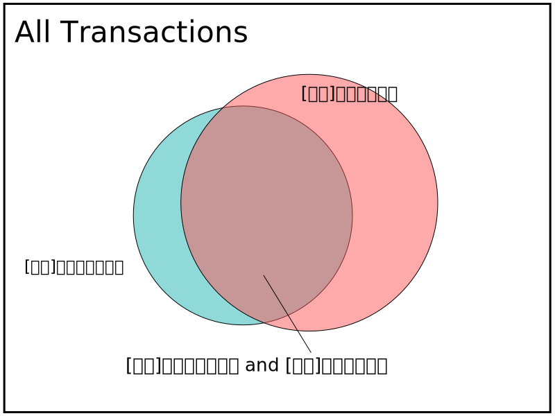

Welcome to Association Rules Mining
Introduction
Association rule mining finds interesting associations and relationships among large sets of data items. This rule shows how frequently a set of item occurs in a transaction. Given a set of transactions, we can find rules that will predict the occurrence of an item based on the occurrences of other items in the transaction. The motivation is that, if there is a large portion of the customers buying [御結]本格和風燒牛肉 together with [御結]蒲燒三文魚腩 in the historical transaction data then we may feel confident to recommend [御結]蒲燒三文魚腩 to a customer if that customer has [御結]本格和風燒牛肉 in the basket. This example can be illustrated in the following diagram.

There are 3 important metrics to evaluate the interestingness of the rules : Support, Confidence, Lift. In the example just mentioned, where the rule is denoted as [御結]本格和風燒牛肉 ⇒ [御結]蒲燒三文魚腩.
-
Support: The fraction of the historical transactions containing both [御結]本格和風燒牛肉 and [御結]蒲燒三文魚腩 - that is the portion of the overlapping area relative to the white rectangle.
-
Confidence: The fraction of the past transaction containing [御結]本格和風燒牛肉 also contains [御結]蒲燒三文魚腩 - that is the portion of the overlapping area relative to the blue circle.
-
Lift: Measurement of how much the fraction of occurrence of [御結]蒲燒三文魚腩 is lifted given that the transaction is containing [御結]本格和風燒牛肉, comparing to all the transactions containing [御結]蒲燒三文魚腩 - that is the ratio of the confidence to the fraction occupied by the red circle.
More detailed mathematical formulation could be found in this section. The direction of association (i.e. [御結]蒲燒三文魚腩 ⇒ [御結]本格和風燒牛肉 versus [御結]本格和風燒牛肉 ⇒ [御結]蒲燒三文魚腩) is commonly determined by the confindence of the rules. The association direction helps to identify the "causes" and "effects".
PageRank
PageRank originally is an algorithm developed by Google to measure the importance of websites pages. This algorithm can also be leveraged to analyse the association graph to evaluate the centeredness of nodes. The importance is that product centeredness is related to product affinity. If a product has high pagerank, it could imply that this product could attract customers to buy more different products.
Node Value
With the association direction determined using confidence, the "causes" and "effects" could be identified. The monetary value "caused" by a product could be measure by summing the sales of the "effects" bought together. Additionally, the monetary value of the "causes" itself is also included when evaluting node values. This estimation heavily relies on 2 assumptions that (1) Drinks cannot generate extra item sales because buying drinks should not be the motivation of clients to purchase our other products; and (2) The direction of the association is determined by the confidence.